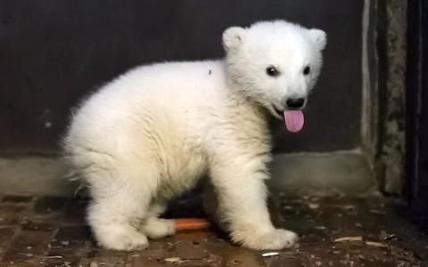
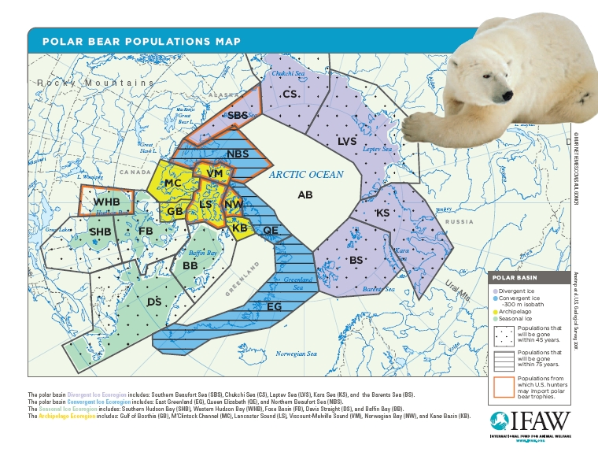

Polar bears are hypercarnivorous bears that mostly live in the Arctic Circle and some surrounding areas. The males are about 1,000 pounds while the females are around half of their size. Although most polar bears are born on land, they spend most of their time on the sea ice. The bear family (Ursidae) is thought to have split from other carnivorans about 38 million years ago. The Ursinae subfamily originated approximately 4.2 million years ago. The oldest known polar bear fossil is a 130,000 to 110,000-year-old jaw bone, found on Prince Charles Foreland in 2004. Fossils show that between 10,000 and 20,000 years ago, the polar bear's molar teeth changed significantly from those of the brown bear which shows that polar bears diverged a population of brown bears that became isolated during a period of glaciation in the Pleistocene.
 